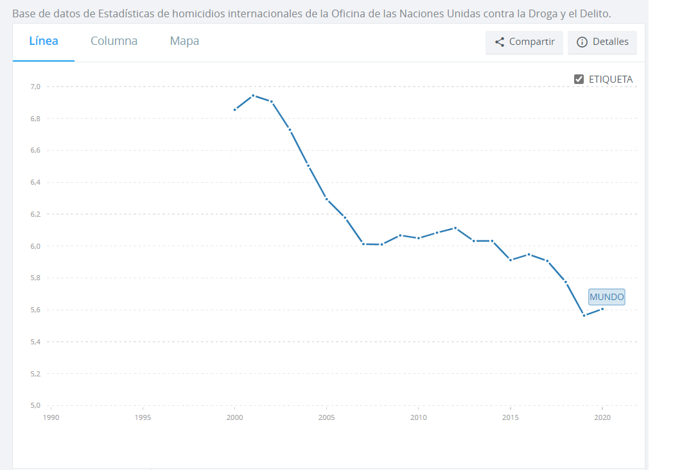
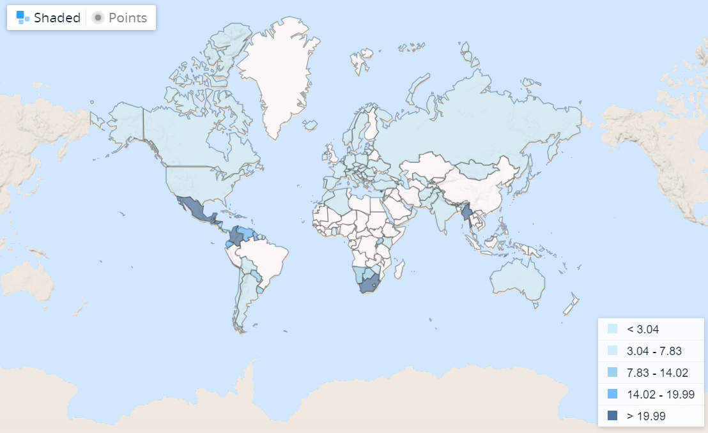
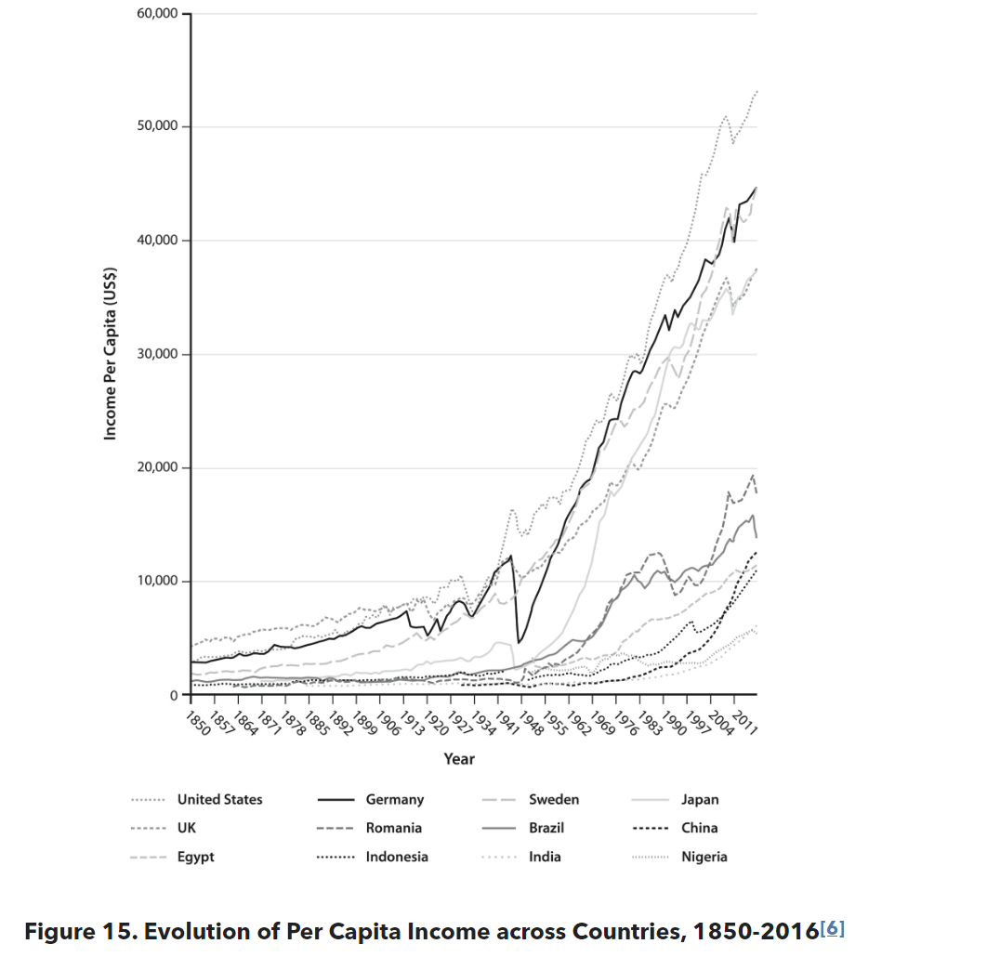
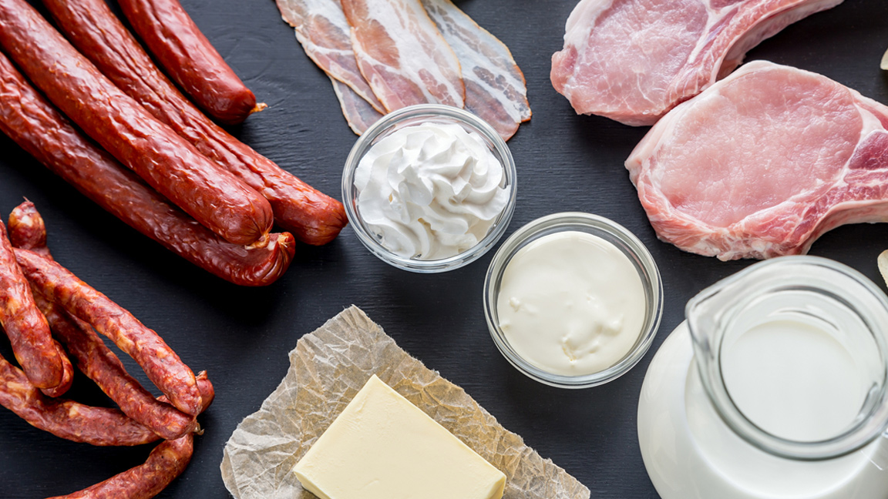
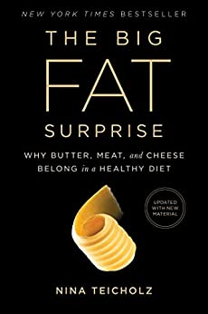
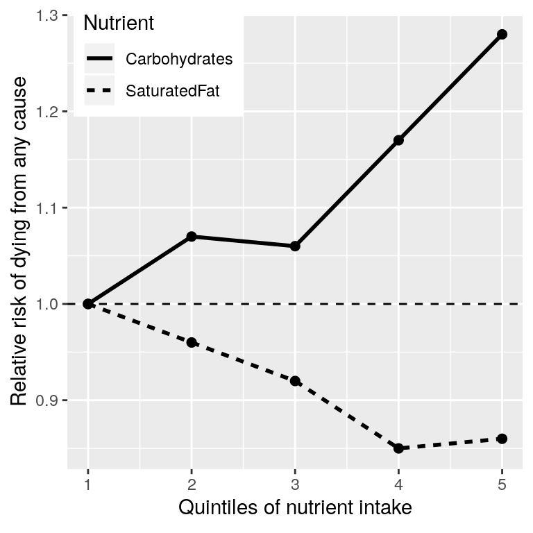
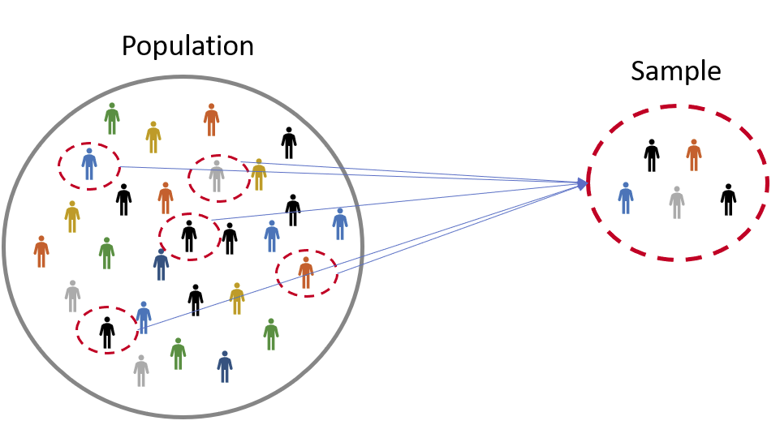
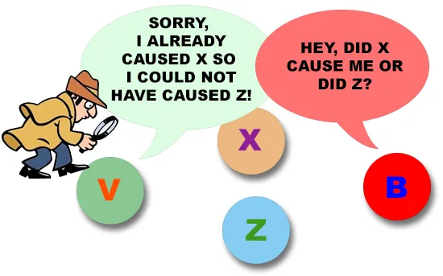

Lectura 1-1: Introducción al Pensamiento estadístico#
El pensamiento estadístico es una forma sistemática de pensar sobre cómo describimos el mundo y usamos los datos para tomar decisiones y hacer predicciones.
Esto se hace teniendo en cuenta la incertidumbre inherente que existe en el mundo real.
Los fundamentos del pensamiento estadístico provienen principalmente de las matemáticas y la estadística, pero también de la informática, la psicología y otros campos de estudio.
La estadística, en particular, es la disciplina que se ocupa de la recopilación, organización, análisis, interpretación y presentación de datos.
Pensamiento Estadístico e Intuición#
La intuición humana a menudo intenta responder a las mismas preguntas que podemos responder utilizando el pensamiento estadístico, pero a menudo se equivoca en la respuesta.
Por ejemplo, en años recientes, la mayoría de los estadounidenses han informado que creen que el crimen violento fue peor en comparación con el año anterior (Pew Research Center).
Sin embargo, un análisis estadístico de los datos reales del crimen muestra que en realidad el crimen violento ha disminuido de manera constante desde la década de 1990.
La intuición nos falla porque confiamos en las mejores suposiciones (a las que los psicólogos se refieren como heurísticas) que a menudo pueden equivocarse.



Pensamiento Estadístico e Intuición#


¿Qué puede hacer la estadística por nosotros?#
Hay tres cosas principales que podemos hacer con la estadística:
Describir: El mundo es complejo y a menudo necesitamos describirlo de una manera simplificada que podamos entender.
Decidir: A menudo necesitamos tomar decisiones basadas en datos, generalmente ante la incertidumbre.
Predecir: A menudo deseamos hacer predicciones sobre nuevas situaciones basadas en nuestro conocimiento de situaciones anteriores.
Ejemplo: Grasa Saturada
Supongamos que queremos responder a la siguiente pregunta: ¿La grasa saturada en nuestra dieta es algo malo?

Podemos responder a esta pregunta utilizando el pensamiento estadístico.
Pero primero, debemos considerar lo que sabemos sobre la grasa saturada.
Enfoque de sentido común: Si comemos grasa, entonces se convertirá directamente en grasa en nuestros cuerpos, ¿verdad?
Y todos hemos visto fotos de arterias obstruidas con grasa, por lo tanto, comer grasa va a obstruir nuestras arterias, ¿verdad?
Enfoque de expertos: Las Guías Alimentarias de la Administración de Alimentos y Medicamentos de los Estados Unidos tienen como una de sus Recomendaciones Clave que “Un patrón de alimentación saludable limita las grasas saturadas”.
Podrías esperar que estas guías se basen en buena ciencia, y en algunos casos lo están.
Sin embargo, como Nina Teicholz describió en su libro “Big Fat Surprise”, esta recomendación en particular parece estar basada más en el dogma de los investigadores de nutrición que en evidencia real.

Enfoque estadístico: podríamos observar la investigación científica real.
PURE: un estudio grande que ha examinado dietas y resultados de salud (incluyendo la muerte) en más de 135,000 personas de 18 países diferentes.
Uno de los análisis de este conjunto de datos informó cómo la ingesta de varias clases de macronutrientes (incluyendo grasas saturadas y carbohidratos) se relacionaba con la probabilidad de morir durante el tiempo que las personas fueron seguidas.
Las personas fueron seguidas durante una mediana de 7.4 años, lo que significa que la mitad de las personas en el estudio fueron seguidas por menos y la mitad fueron seguidas por más de 7.4 años.
La siguiente figura muestra la relación entre la ingesta de grasas saturadas y carbohidratos y el riesgo de morir por cualquier causa.

Esta gráfica se basa en diez números.
Para obtener estos números, los investigadores dividieron al grupo de 135,335 participantes del estudio (al que llamamos la “muestra”) en 5 grupos (“quintiles”).
El primer quintil contiene al 20% de las personas con la menor ingesta, y el quinto quintil contiene al 20% con la mayor ingesta.
Luego, los investigadores calcularon con qué frecuencia las personas en cada uno de esos grupos morían durante el tiempo que estaban siendo seguidos.
La figura expresa esto en términos del riesgo relativo de morir en comparación con el quintil más bajo.
Si este número es mayor que uno, significa que las personas en el grupo tienen más probabilidades de morir que las personas en el quintil más bajo.
Mientras que si es menor que uno, significa que las personas en el grupo tienen menos probabilidades de morir.
La figura es bastante clara: las personas que consumieron más grasa saturada tenían menos probabilidades de morir durante el estudio.
Lo opuesto se observa para los carbohidratos: cuanto más carbohidratos comía una persona, más probable era que muriera durante el estudio.
Este ejemplo muestra cómo podemos usar las estadísticas para describir un conjunto de datos complejo en términos de un conjunto de números mucho más simple.
Si tuviéramos que mirar los datos de cada uno de los participantes del estudio al mismo tiempo, estaríamos sobrecargados de datos.
También sería difícil ver el patrón que surge cuando se describen de manera más simple.
A pesar de las cifras en la figura, también sabemos que hay mucha incertidumbre en los datos.
Hay algunas personas que murieron temprano a pesar de que llevaban una dieta baja en carbohidratos, y otras personas que comieron muchos carbohidratos pero vivieron hasta una edad avanzada.
Dada esta variabilidad, queremos decidir si las relaciones que vemos en los datos son lo suficientemente grandes como para que no esperaríamos que ocurran aleatoriamente.
Las estadísticas nos proporcionan las herramientas para tomar este tipo de decisiones.
A menudo, las personas externas ven esto como el propósito principal de las estadísticas.
Pero como veremos a lo largo del curso, esta necesidad de tomar decisiones blanco y negro basadas en evidencia difusa a menudo ha llevado a los investigadores por el camino equivocado.
Si nuestras conclusiones se limitaran a las personas específicas en el estudio en un momento particular, entonces el estudio no sería muy útil.
Basándonos en los datos, también nos gustaría hacer predicciones sobre resultados futuros.
Por ejemplo, una compañía de seguros de vida podría querer usar datos sobre la ingesta de grasa y carbohidratos de una persona en particular para predecir cuánto tiempo es probable que viva.
Un aspecto importante de la predicción es que requiere que generalicemos a partir de los datos que ya tenemos a alguna otra situación, a menudo en el futuro.
En general, los investigadores deben asumir que su muestra particular es representativa de una población más grande.
Esto requiere que obtengan la muestra de una manera que proporcione una imagen imparcial de la población.
Por ejemplo, si el estudio PURE solo hubiera reclutado participantes vegetarianos, probablemente no querríamos generalizar los resultados a los no vegetarianos.
Las grandes ideas de las estadísticas#
Existen una serie de ideas muy básicas que atraviesan casi todos los aspectos del pensamiento estadístico.
Aprendiendo de los datos
Agregación
Incertidumbre
Muestreo de una población
Causalidad y estadísticas
A continuación, examinamos cada uno de ellos con más detalle.
Aprendiendo de los datos#
Una forma de pensar en las estadísticas es como un conjunto de herramientas que nos permiten aprender de los datos.
En cualquier situación, comenzamos con un conjunto de ideas o hipótesis sobre lo que podría ser el caso.
En el estudio PURE, los investigadores pueden haber comenzado con la expectativa de que comer más grasa llevaría a tasas de mortalidad más altas, dado el dogma negativo prevaleciente sobre las grasas saturadas.
Más adelante en el curso, introduciremos la idea del conocimiento previo, que se supone refleja el conocimiento que llevamos a una situación.
Las estadísticas nos proporcionan una forma de describir cómo los nuevos datos pueden utilizarse mejor para actualizar nuestras creencias.
Agregación#
Otra forma de pensar en las estadísticas es como “la ciencia de desechar datos”.
En el ejemplo del estudio PURE anterior, tomamos más de 100,000 números y los condensamos en diez.
Es este tipo de agregación uno de los conceptos más importantes en estadística.
Las estadísticas nos proporcionan formas de caracterizar la estructura de los agregados de datos, y con fundamentos teóricos que explican por qué esto generalmente funciona bien.
Sin embargo, también es importante tener en cuenta que la agregación puede ir demasiado lejos.
A veces, un resumen puede proporcionar una imagen engañosa de los datos.
Incertidumbre#
El mundo es un lugar incierto.
Ahora sabemos que fumar cigarrillos causa cáncer de pulmón, pero esta causalidad es probabilística.
Un hombre de 68 años que fumó dos paquetes al día durante los últimos 50 años y continúa fumando tiene un 15% de riesgo de contraer cáncer de pulmón.
Esto es mucho más alto que la posibilidad de cáncer de pulmón en un no fumador.
Sin embargo, también significa que habrá muchas personas que fumen toda su vida y nunca contraigan cáncer de pulmón.
Las estadísticas nos proporcionan las herramientas para caracterizar la incertidumbre, tomar decisiones bajo incertidumbre y hacer predicciones cuya incertidumbre podemos cuantificar.
A menudo se ve a los periodistas escribir que los investigadores científicos han “probado” alguna hipótesis.
Pero el análisis estadístico nunca puede “probar” una hipótesis, en el sentido de demostrar que debe ser cierta.
Las estadísticas pueden proporcionarnos evidencia, pero siempre es tentativa y está sujeta a la incertidumbre que siempre está presente en el mundo real.
Muestreo de una población#
El concepto de agregación implica que podemos obtener ideas útiles al colapsar los datos.
¿Pero cuántos datos necesitamos?
La idea de muestreo dice que podemos resumir una población entera basándonos solo en una pequeña cantidad de muestras de la población.
Siempre y cuando esas muestras se obtengan de la manera correcta.

Por ejemplo, el estudio PURE inscribió una muestra de alrededor de 135,000 personas.
Pero su objetivo era proporcionar ideas sobre los miles de millones de humanos que componen la población de la cual se tomaron esas personas.
La forma en que se obtiene la muestra del estudio es crítica, ya que determina cuán ampliamente podemos generalizar los resultados.
Otro conocimiento fundamental sobre el muestreo es que, aunque las muestras más grandes son siempre mejores (en términos de su capacidad para representar con precisión a toda la población), hay rendimientos decrecientes a medida que la muestra se hace más grande.
De hecho, la tasa a la que disminuye el beneficio de muestras más grandes sigue una regla matemática simple, creciendo como la raíz cuadrada del tamaño de la muestra.
De manera que para duplicar la calidad de nuestros datos necesitamos cuadruplicar el tamaño de nuestra muestra.
Causalidad y estadística#
El estudio PURE pareció proporcionar pruebas bastante fuertes de una relación positiva entre comer grasa saturada y vivir más tiempo.
Sin embargo, esto no nos dice lo que realmente queremos saber: si comemos más grasa saturada, ¿eso nos hará vivir más tiempo?
Esto se debe a que no sabemos si existe una relación causal directa entre comer grasa saturada y vivir más tiempo.
Los datos son consistentes con tal relación, pero son igualmente consistentes con algún otro factor que cause tanto una mayor ingesta de grasa saturada como una vida más larga.

Causalidad y estadística#
Por ejemplo, es probable que las personas que son más ricas coman más grasa saturada y las personas más ricas tienden a vivir más tiempo.
Su vida más larga no se debe necesariamente a la ingesta de grasa.
En lugar de eso, podría deberse a una mejor atención médica, reducción del estrés psicológico, mejor calidad de los alimentos, u otros factores.
Los investigadores del estudio PURE intentaron tener en cuenta estos factores.
Pero no podemos estar seguros de que sus esfuerzos hayan eliminado completamente los efectos de otras variables.
El hecho de que otros factores puedan explicar la relación entre la ingesta de grasa saturada y la muerte es un ejemplo de la afirmación de que “la correlación no implica causalidad”.
Aunque la investigación observacional (como el estudio PURE) no puede demostrar de manera concluyente relaciones causales, generalmente pensamos que la causalidad puede demostrarse utilizando estudios que controlan y manipulan experimentalmente un factor específico.
En medicina, tal estudio se conoce como un ensayo controlado aleatorizado (ECA).
Supongamos que queremos hacer un ECA para examinar si aumentar la ingesta de grasa saturada aumenta la esperanza de vida.
Para hacer esto, tomaríamos una muestra de personas y luego las asignaríamos a un grupo de tratamiento o a un grupo de control.
Grupo de tratamiento: personas a las que se les indica que aumenten su ingesta de grasa saturada.
Grupo de control: personas a las que se les indica que sigan comiendo igual que antes.
Es esencial que asignemos a las personas a estos grupos de forma aleatoria.
De lo contrario, las personas que eligen el tratamiento podrían ser diferentes de alguna manera que las personas que eligen el grupo de control.
Por ejemplo, podrían ser más propensas a participar también en otros comportamientos saludables.
Luego seguiríamos a los participantes con el tiempo y veríamos cuántas personas en cada grupo murieron.
Debido a que aleatorizamos a los participantes en los grupos de tratamiento o control, podemos estar razonablemente seguros de que no hay otras diferencias entre los grupos que podrían confundir el efecto del tratamiento.
Sin embargo, aún no podemos estar seguros porque a veces la aleatorización produce grupos de tratamiento versus control que varían de alguna manera importante.
Los investigadores a menudo intentan abordar estos factores confusos mediante análisis estadísticos, pero eliminar la influencia de un factor confuso de los datos puede ser muy difícil.
Un número de ECA han examinado la cuestión de si cambiar la ingesta de grasa saturada resulta en una mejor salud y una vida más larga.
Estos ensayos se han centrado en reducir la grasa saturada debido a la fuerte creencia entre los investigadores de nutrición de que la grasa saturada es mortal.
¡La mayoría de estos investigadores probablemente habrían argumentado que no era ético hacer que las personas comieran más grasa saturada!
Sin embargo, los ECA han mostrado un patrón muy consistente: en general, no hay un efecto apreciable en las tasas de mortalidad al reducir la ingesta de grasa saturada.